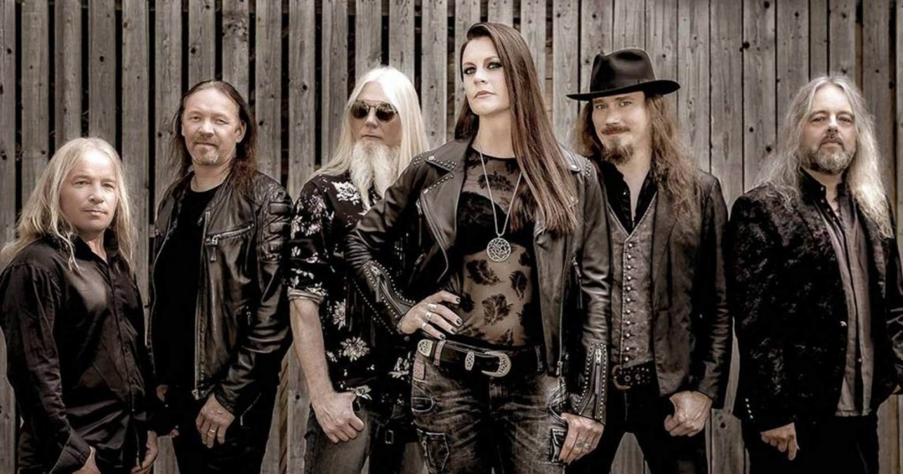

- Nemo
- Wish I Had an Angel
- The Siren
Beste nummers
- Amaranth
- Ever Dream
- Feel For You
Persoonlijke favorieten
Het idee van Nightwish ontstond toen Tuomas Holopainen met enkele vrienden een nacht rond het kampvuur doorbracht. Kort daarna, in juli 1996, werd de band opgericht. De eerste drie nummers kenmerkten zich door het gebruik van akoestische gitaar, keyboards en zang van Tarja Turunen. Deze drie nummers "Nightwish", "The Forever Moments" en "Etiäinen" verschenen ook op de eerste demo van de band. Aan het nummer Nightwish dankt de band ook zijn naam.